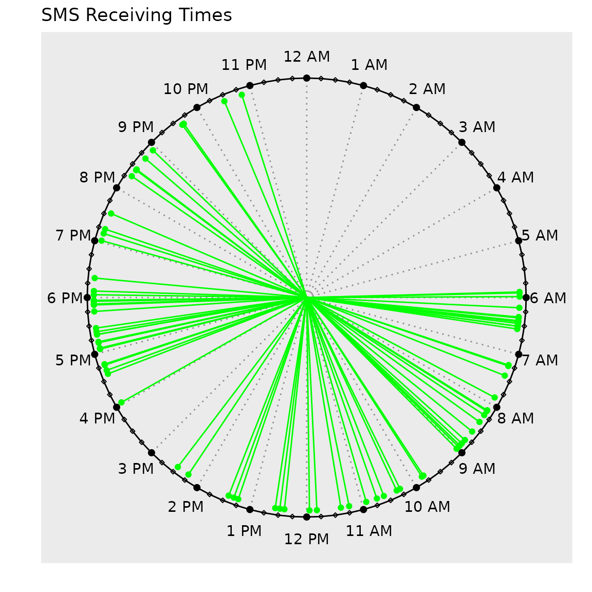

clockplot
clockplot.RmdThe package clockplot is used to generate clock charts
showing event times on a 24-hour clock. Additionally it helps you make a
day chart, week chart, or month chart, or plan events in those
periods.
⚠ The plots shown here may not produce the expected output due to the behavior of Rmarkdown. To see the actual appearance, visit this link or run the codes given.
Getting started
After installing the package, load it to use the available functions.
The clockpolot offers three types of plot
- Clock chart
- Period chart
- Period planner
The first shows event times (HH:MM:SS) on a 24 hour clock. The times can be arbitrary and not necessarily specific hours at all.
The second type allows you to show values during a certain duration (day, week, month, and year)
Finally, the third one can help you make a plan in a certain period (day, week, month, and year), presenting tasks against period.
Will create another vignette to explain how it all was made.
Examples
Let us see examples of each of the function.
clock_chart()
This creates a clockplot, showing event times on a 24-hour clock. The
hands are neither colored nor length modified by a criteria. To do so,
please use other clock_chart*() functions (see below).
To make use of this simple chart, we need a data frame with at least
one column showing the times of a certain event. The format should be in
HH:MM:SS (for example 19:50:10). If you have times in HH:MM format, use
make_hms function to convert to HH:MM:SS format.
First, let’s create a sample data.
library(tibble) # to make a tibble (tidy data frame)
df <- tibble::tibble(hr = sample(0:23, 50, replace = TRUE),
mnt = sample(0:59, 50, replace = TRUE),
sec = sample(0:59, 50, replace = TRUE),
time = paste(hr, mnt, sec, sep = ":"),
value = sample(60,50))
clock_chart(df, time)